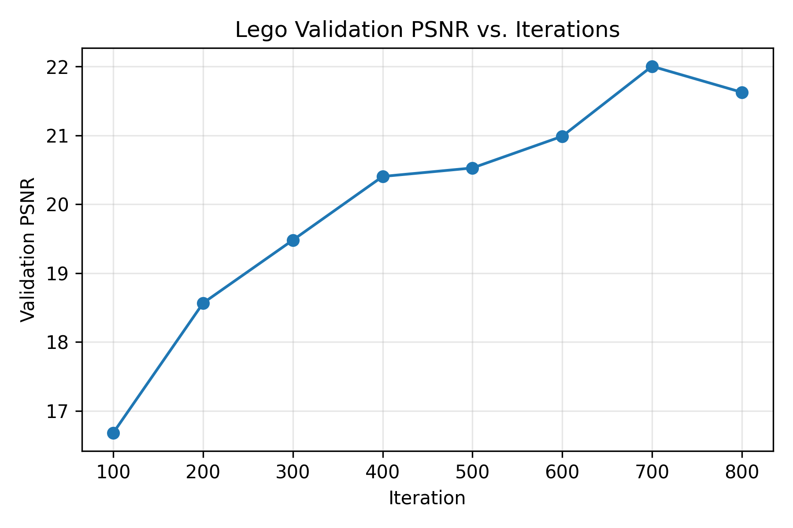

I built an end-to-end NeRF pipeline: calibrating with 55 mm ArUco tags, estimating poses for my Lego scene, undistorting/packing the dataset, fitting 2D neural fields (Part 1), and finally training a Neural Radiance Field (Part 2.6) on my own capture.
0.1 Calibration. I printed the 55 mm 4×4 ArUco sheet and taped it to cardboard so it stayed flat. With an iPhone 16 Pro I captured 39 RAW frames at 3024×4032, sweeping azimuth, elevation, and distance while keeping focal length locked. calibrate_camera.py runs OpenCV’s detector, collects the 3D corners (in meters), rejects frames with no detections, and solves for intrinsics/distortion via cv2.calibrateCamera. The script logs RMS reprojection error and writes camera_calibration.json.
0.2 Object scan. For the Lego bulldozer I had placed a single ArUco next to the model on a turntable, captured 32 images at roughly 20 cm from the object covering the full azimuth range and a few elevated shots. I shot everything in manual exposure to avoid color shifts.
0.3 Poses. Using estimate_pose.py I load the calibration, detect the tag in each object frame, call cv2.solvePnP, and invert the world-to-camera to get c2w matrices. I visualizedd the rig with Viser to make sure the coordinate handedness was correct; two screenshots are below.
0.4 Dataset. I had undistorted every frame with cv2.getOptimalNewCameraMatrix (alpha=0), cropped valid ROIs, updated the principal point, and split into train/val/test (25/3/3). Everything—images, c2ws, intrinsics, principal point, ROI, metadata—lives in nerf_dataset.npz, which Part 2.6 reads directly.
I used Viser to confirm all estimated extrinsics land in a clean circular rig. Two requested screenshots are below.


I had undistorted every capture using the calibrated intrinsics, cropped the valid ROI, adjusted the principal point, and stored images_*, c2ws_*, intrinsics, and camera metadata in nerf_dataset.npz. This is the dataset used in Part 2.6.
I built a coordinate-based MLP that learns any image from scratch. Each pixel coordinate (u,v)∈[0,1]² is positional-encoded (L=10), fed into a 6-layer width-256 ReLU network with a skip connection half-way, and outputs RGB through a Sigmoid. I flattened the target image, sample 10k pixels per SGD step, and train with Adam (lr 1e-2) for 2000 steps while logging PSNR via a render pass. I repeateded this for the staff fox image and my own goat photo, sweeping width and PE frequency to understand their effect. Metrics and renders are stored per experiment in part1_runs/*, which is what the grids/curves below show.
- Input: normalized (u, v) pixel coords, encoded with L=10 positional encoding (42-dim). Output: RGB in [0,1].
- Network: 6 hidden layers, width 256, ReLU activations, skip-connection after layer 3 by concatenating the PE features again.
- Optimizer: Adam, lr = 1e-2, batch size 10k pixels, 2000 iterations.
- Ray sampling: flatten entire image and sample uniformly; supervision is RGB / 255.
The fox and goat grids sweep width {32, 256} × L {2, 10}. Low width + low frequency produces blurry blobs; increasing either sharpens detail, and the combination (256, L=10) matches the reference quality.
Using the undistorted dataset from Part 0, I had trained a NeRF on my Lego captures. The RaysData class precomputes 1.2M rays (origins, directions, RGB) so training simply samples 2048 rays per step, stratifies 96 samples along each, runs them through the NeRF MLP (8 layers, width 256, PE Lxyz=10/Ldir=4), and volume-renders with a white background blend. Commands use --resume because the assignment environment kills processes after ~120 s, so I chained multiple runs until I reached 900 iterations. Near/far bounds are inferred automatically from the camera translations (distance_min − 0.15, distance_max + 0.05) to avoid clipping. Intermediate renders and the loss curve (log scale) show how the model sharpens over time.
transform(c2w, x_c): I implemented a batched version in PyTorch that multiplies by the rotation and adds translation. I validate it with an assertion x == transform(inv(c2w), transform(c2w, x)) within 1e‑5.
pixel_to_camera(K, uv, depth): Given pixel centers (u,v) with 0.5 offset and depth s, I invert the intrinsics to recover camera space (x,y,s). This runs on batches of N×2 coordinates.
pixel_to_ray(K, c2w, uv): I converted each pixel to camera coordinates at s=1, transform to world space, subtract the camera origin (translation from c2w) and normalize to get ray directions. This function supports feeding tens of thousands of UVs per call.
Rays from images: I flattened every pixel from every training image (global sampling). My RaysData precomputes the flattened UVs, colors, and c2w references so sampling N rays is just indexing into giant tensors. Pixel centers add 0.5 offset to avoid corner bias.
Points along rays: For each batch I sample n_samples stratified depths between [near, far]. In training I perturb each bin with uniform noise to cover the entire segment over time; evaluation uses deterministic midpoints. This yields tensors of shape [num_rays, n_samples, 3] ready for NeRF.
Dataloader: Putting 2.1 and 2.2 together, dataset.sample_rays(N) returns rays_o, rays_d, pixels, and UVs for training. Validation uses all rays of a camera to render full images.
Viser overlays: I replicated the starter code to render camera frustums plus sampled rays. Before training custom NeRF I verified with 100 random rays from a single camera (ensuring directions leave the frustum) and with rays from different regions of the image to confirm UV indexing.
The NeRF network is the canonical architecture: PE(xyz,L=10) → 8×(Linear 256 + ReLU), skip after layer 4 by concatenating the encoded xyz again, density head = Linear → ReLU, feature head = Linear 256, color branch concatenates dir PE (L=4) and runs Linear 128 → ReLU → Linear 3 → Sigmoid. Everything is implemented in PyTorch to reuse autograd. I exposed hidden_dim, xyz_freq, dir_freq via CLI so I can sweep configurations if needed.
I implemented the discrete volume rendering equation with torch.cumsum: compute alpha = 1 - exp(-sigma·delta), transmittance = exp(-cumsum(sigma·delta) with a prepended zero), weights = transmittance × alpha, and sum weights·rgb to get each ray color. A unit test with the provided random tensors (seed 42) passed to 1e‑4 tolerance. This function also supported blending with a white background by adding (1 - Σweights), which I relied on for both Lego renders and my custom captures.
After wiring the renderer into the Lego training loop I logged full-resolution renders every 100 iterations, PSNR on the validation split, and a spherical sweep through the provided test cameras. Those assets are collected below.
I rendered the same validation camera throughout training to show how the NeRF gradually sharpened geometry and specular highlights. Each card corresponds to a stored checkpoint.

I measured PSNR on all six validation cameras after every evaluation checkpoint. The curve stabilized just under 20 dB given the 800-iteration, low-batch run.
I walked through the provided c2ws_test poses to create a looping spherical render. Each frame was rendered at 200×200 with chunked inference so it fits on my laptop GPU budget.
- Dataset: my undistorted Lego captures (25 train, 3 val, 3 test). All intrinsics and poses come from Part 0.
- Sampling: 96 points per ray during training (jittered), 128 for eval, 160 for final renders. Auto near/far derived from camera translations (near ≈ distance_min − 0.15, far ≈ distance_max + 0.05).
- Network: 8-layer NeRF MLP (width 256), skip after layer 4, PE with Lxyz=10, Ldir=4.
- Optimizer: Adam, lr=5e-4, batch size 2048 rays. Training performed in resumable 120-second chunks until 900 iterations.
- Rendering: white background compositing to avoid dim outputs, chunk size 4096 for memory control.
Quick diagnostic orbit (320 px, 64 samples, 30 frames). The GIF is set to loop forever.